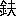

たま※［＃「ころもへん＋攀」、U+897B］
一葉女史
をかしかるべき
世を
空蝉のと
捨て
物にして
今歳十九
年、
天のなせる
麗質、をしや
埋木の
春またぬ
身に、
青柳いと
子と
名のみ
聞ても
姿しのばるゝ
優しの
人品、それも
其筈昔しをくれば
系圖の
卷のこと
長けれど、
徳川の
流れ
末つかた
波まだ
立たぬ
江戸時代に、
御用お
側お
取次と
長銘うつて、
席を八
萬騎の
上坐に
占めし
青柳右京が
三世の
孫、
流轉の
世に
生れ
合はせては、
姫と
呼ばれしことも
無けれど、
面影みゆる
長襦袢の
縫もよう、
母が
形見か
地赤の
色の、
褪色て
殘るも
哀いたまし、
住む
所は
何方、むかし
思へば
忍が
岡の
名も
悲しき
上野の
背面谷中［＃ルビの「や か」はママ］のさとに
形ばかりの
枝折門、
春は
立どまりて
御覽ぜよ、
片枝さし
出す
垣ごしの
紅梅の
色ゆかしと
延びあがれど、
見ゆるは
萱ぶきの
軒端ばかり、
四邊は
廻ぐらす
花園に
秋は
鳴かん
虫のいろ／＼、
天然の
籠中に
收めて
月に
聞く
夜の
心きゝたし、
扨もみの
虫の
父はと
問へば、
月毎の十二
日に
供ゆる
茶湯の
主が
夫、
母も
同じく
佛檀の
上にとかや、
孤獨の
身は
霜よけの
無き
花檀の
菊か、
添へ
竹の
後見ともいふべきは、
大名の
家老職背負てたちし
用人の、
何之進が
形見の
息松野雪三とて
歳三十五六、
親ゆづりの
忠魂みがきそへて、二
代の
奉仕たゆみなく、一
町餘りなる
我が
家より、
雪にも
雨にも
朝夕二
度の
機嫌きゝ
怠らぬ
心殊勝なり、
妻もたずやと
進むる
人あれど、
何の
我がこと
措き
給へ
夫よりは
孃さまの
上氣づかはしゝ、
廿歳といふも
今の
間なるを、
盛りすぎては
花も
甲斐なし、
適當の
聟君おむかへ申し
度ものと、一
意專心主おもふ
外なにも
無し、
主人大事の
心に
比らべて
世上の
人の
浮薄浮佻、
才あるは
多し
能あるも
少なからず、
容姿學藝すぐれたればとて、
大事の
御一
生を
托すに
足る
人見渡したる
世上に
有りや
無しや
知れたものならず、
幸福の
生涯を
送り
給ふ
道、そも
何とせば
宜からんかと、
案じにくれては
寐ずに
明す
夜半もあり、
嫁入時の
娘もちし
母親の
心なんのものかは、
疵あらせじとの
心配大方にはあらざりけり、
雪三かくまで
熱心の
聟撰みも、
糸子は
目の
前すぐる
雲とも
思はず、
良人持たんの
觀念、
何として
夢さら／＼あらんともせず、
樂みは
春秋の
園生の
花、ならば
胡蝶になりて
遊びたしと、
取とめもなきこと
言ひて
暮しぬ、さるほどに
今歳も
空しく
春くれて
衣ほすてふ
白妙の
色に
咲垣根の
卯の
花、こゝにも一
ツの
玉川がと、
遣水の
流れ
細き
所に
影をうつして、
風［＃ルビの「ぜか」はママ］なくても
凉しき
夏の
夕暮、いと
子湯あがりの
散歩に、
打水のあと
輕く
庭下駄にふんで、
裳とる
片手はすかし
骨の
塗柄の
團扇に
蚊を
拂ひつ、
流れに
臨んで
立たる
姿に、
空の
月恥らひてか
不圖かゝる
行く
雲の
末あたり
俄に
暗くなる
折しも、
誰が
思［＃ルビの「がも」はママ］ひにか
比す
螢一
ツ風にたゞよひて
只眼の
前、いと
子及ぶまじと
知りても
只は
有られず、ツト
團扇を
高くあぐればアナヤ
螢は
空遠く
飛んで
手元いかゞ
緩るびけん、
團扇は
卯の
花垣越えて
落ちぬ、
是は
何とせんと
困じ
果てゝ、
垣根の
際よりさしのぞけば、
今しも
雲足きれて
新たに
照らし
出す
月の
光りに、
目と
目見合して
立たる
人、
何時の
間に
此所へは
來て、
今まで
隱れてゞも
居しものか、
知らぬことゝて
取乱せし
姿見られしか、
見られしに
相違なしと、
面俄にあつくなりて、
夢現うつむけば、
細く
清しき
男の
聲に、これは
其方さまのにや
返上せんお
受取なされよと、
垣ごしにさし
出す
我が
團扇、
取んと
見あぐれば
恥かしゝ
美少年、
引かんとする
團扇の
先一寸と
押へて、
思ひにもゆるは
螢ばかりと
思し
召すかと
怪しの
一言、
暫時は
糸子われか
人か、
有無の
間に
迷ひし
心、
本の
心に
歸りし
時は、
卯の
花垣に
照る
月高く
澄んで、
流れにうつる
影我一人になりぬ、さるにても
彼の
人は
誰ならん、
隣家は
植木屋と
聞たるが、
思ひの
外の
人品かなと、
其方を
眺めて
佇立めば、
風に
傳たはる
朗詠の
聲いとゞ
床しさの
數を
添へぬ
糸子世は
果敢なきものと
思ひ
捨てゝ、
盛りの
身に
紅白粉よそほはず、
金釵綾羅なんの
爲の
飾り、
入らぬことぞと
顧みもせず、
過ぎし
心に
恥かしや、
我れ
迷ひたりお
姿今一
度見まほしゝと
延び
上がれば、モシと
扣へらるゝ
袂の
先、
誰れぞオヽ
松野か
何として
此所へは
否や
何時の
間にと
詞有哉無哉支離滅裂
丸窓にうつる
松のかげ、
幾夜詠めて
月も
闇になるまゝにいと
子の
心その
通り、
打あけては
問ひもならぬ、
隣の
人の
素性聞たしと
思ふほど、
意地わろく
誰れも
告げぬのか
夫ともに
知らぬのか、よもや
植木屋の
息子にてはあるまじく、さりとて
誰れ
住替りし
風説も
聞かねば
外に
人の
有る
筈なし、
不審さよの
底の
心ろは
其人床しければなり、
用もなき
庭歩行にありし
垣根の
際、
幾度びか
顧りみて
思へば、さてもはした
無きことなり、
氏も
知らず
素性も
知らず、
心情も
何も
知れぬ
人に
戀ふとは、
我れながら
淺ましきことなり、
定なき
世に
定めなき
人を
頼む、
婦人の
身はかなしと
思もひ
［＃「思もひ」はママ］絶て、
松野が
忠節の
心より、
我大事と
思もふあまりに
樣々の
苦勞心痛、
大方ならぬ
志は
知るものから、
夫すら
空ふく
風と
聞きて、
耳にだに
止めんとせざりし
身が、
何ぞや
跡もかたも
無き
戀に
磯の
鮑の只
一人もの
思ふとは、
心の
問はんもうら
恥かし、
人知らぬ
心の
惱みに、
昨日一昨日は
雪三が
訪問さへ
嫌忌くて、
詞多くも
交はさゞりしを、
如何に
聞て
如何ばかり
案じやしけん、
氣の
毒のことしてけるよ、いで
今日の
日も
暮なんとするを、
例の
足おとする
頃なり、
日頃くもりし
胸の
鏡すゞしき
物語に
［＃「物語に」は底本では「物語に」］晴さばや
［＃「晴さばや」は底本では「晴さばや」］とばかり、
垣根の
近邊たちはなれて、
見返りもせず二三
歩すゝめば
遣水の
流がれおと
清し、
心こゝに
定まつて
思へば
昨日の
我れ、
彷彿として
何故ゑに
物おもひつる
身ぞ、
廣き
園生は
我が
爲めに
四季の
色をたゝかはし、
雅やかなる
居間は
我が
爲めに
起居の
自由あり、
風に
鳴る
軒ばの
風鈴、
露のしたゝる
釣忍艸、いづれをかしからぬも
無きを、
何をくるしんでか、
要なき
胸は
痛めけん、
愚かしさよと
一人笑みして、
竹椽のはしに
足を
休めぬ、
晩風凉しく
袂に
通ひて、
空に
飛かふ
蝙蝠のかげ二つ三つ、
夫すら
漸く
見えず
成ゆく、
片折戸を
靜かに
音なふは
聞なれし
聲音なり、いと
子厨のかたに
聲をかけて、
玉よ
雪三が
參りたりと
覺るに、
燈火とくと
命令ながら、ツト
立て
門の
方うち
見やりしが、
闇にもしるき
白き
手を
擧げて、
稚兒が
母よぶ
樣に
差まねぎつ、
坐敷にも
入らではるかに
待てば、
松野は
徐ろに
［＃ルビの「おもか」はママ］歩みを
進めて、
早く
竹椽のもとに
一揖するを、
糸子かるく
受けて
莞爾に、
花莚の
半を
分けつゝ
團扇を
取つて
風を
送れば、
恐れ
多しと
突く
手慇懃なり、
此ほどはお
不快と
承りしが、
最早平日に
返らせ
給ひしか、お
年輩には
氣欝の
病ひの
出るものと
聞く、
例の
讀書は
甚だわろし、
大事の
御身等閑におぼしめすなと、
知らねばこそあれ
眞實なる
詞にうら
耻かしく、
面すこし
打ち
赤めて、
否とよ
病氣は
最う
癒りたり、
心配かけしが
氣の
毒ぞと
我れ
知らず
出る
侘の
言葉に、
何ごとの
仰せぞ、
主從の
間に
氣の
毒などゝの
御懸念ある
筈なし、お
前さまのおん
身に
御病氣その
外何事ありても、
夫はみな
小生が
罪なり、
御兩親さまのお
位牌さては
小生が
亡兩親に
對して
雪三何の
申譯なければ、
假令身にかへ
命にかへても
盡くし
參らする
心なるを、よしなき
御遠慮はお
置き
下されたしと
恨み
顏なり、これ
程までに
思ひくるゝ、
其心知らぬにも
有らぬを、この
頃の
不愛想我が
心の
悶ゆるまゝに、
詞交はすが
懶くて、
病氣などゝ
有もせぬ
僞りは
何ゆゑに
云ひけん、
空おそろしさに
身も
打ふるへて、
腹たちしならば
雪三ゆるしてよ、
隔つる
心は
微塵もなけれど、
主の
家來の
昔しは
兎もあれ、
世話にこそなれ
恩もなにもなき
我が
身が、
常日ごろ
種々の
苦勞をかける
上にこの
間中よりの
病氣、それ
程のことでも
無かりしを、
何故か
氣が
欝ぎて
［＃ルビの「うさ」はママ］、
心にも
無き
所置ありしかもしれず、
夫がつひ
氣の
毒にて
言ひたるなれど、
心に
障はらば二
度とは
言はじ、
汝に
捨られて
我れ
何としてか
世には
立つべき、
心おさなければ
目にあまることも
有らん、
腹立しきことも
多ならんが、
外に
寄る
邊のなき
身なるを、
妹とも
娘とも
斷念めて、
教へ
立られなば
嬉しきぞと、
松野が
膝ゆり
動かして
涙ぐめば、
雪三身を
退りて
頭を
下げつゝ、
分にあまりし
仰せお
答への
言葉もなし、お
心細き
御身なればこそ、
小生風情に
御叮嚀のお
頼み、お
前さま
御存じはあるまじけれど、
徃昔の
御身分おもひ
出されてお
痛はしゝ、
我れ
後見まゐらする
程の
器量なけれど、
赤心ばかりは
［＃ルビの「まごゝろ」はママ］誰れ
人にまれ
劣ることかは、
御心やすく
思召せよ
世にも
勝れし
聟君迎へ
參らせて
花々しきおん
身にも
今なり
給はん、
嗚呼がましけれど
雪三が
生涯の
企望はお
前さま
御一
身の
御幸福ばかりと、
言ひさして
詞を
切りつ
糸子が
面じつと
眺めぬ、
糸子何心なく
見返して、
我は
花々しき
身にならんの
願ひもなく、まして
聟むかへんの
嫁入りせんのと、
世の
人めかしき
望み
少しもなし、
只汝さへ
見捨ずは、
御身さへ
厭はせ
給はずは、
我が
生涯の
幸福ぞかしとて
嫣然とばかりうち
笑めば、
松野じり／＼と
膝を
進めて、
孃さまは
夫ほどまでに
雪三を
力と
覺しめしてか、それとも一
時のお
戯れか、
御本心仰せ
聞けられたしと
問ひ
誥むるを、
糸子ホヽと
笑ひて
松野が
膝に
輕く
手を
置きつ、
戯むれかとは
問ふ
丈も
淺し、
親とも
兄ともなく
大切に
思ふものをと、
無心に
言へば
忝なしと一
ト言語尾ふるへて
消えぬ
洗ひ
髮の
束髮に
薔薇の
花の
飾りもなき
湯上りの
單衣でたち、
素顏うつくしき
夏の
富士の
額つき
眼に
殘りて、
世は
荻の
葉に
秋風ふけど
螢を
招ねきし
塗柄の
團扇、
面影はなれぬ
貴公子あり、
駿河臺の
紅梅町にその
名も
薫ほる
明治の
功臣、
竹村子爵との
尊稱は
千軍万馬のうちに
含みし、つぼみの
花の
開けるにや、
夫が
次男に
緑とて
才識並らび
備はる
美少年、
今歳のなつの
避暑には
伊香保に
行かんか
磯部にせんか、
知る
人おほからんは
佗しかるべし、
牛ながら
引入れる
中川のやどり
手近くして
心安き
所なからずやと、
打うめかれしをお
出入の
 駝師某
駝師某なるもの
承はりて、
拙郎が
谷中の
茅屋せき
入れし
水の
風流やかなるは
無きものから、
紅塵千丈の
市中ならねば
凉しきかげもすこしはあり、
足を
運び
給はゞ
忍ぶが
岡の
緑樹の
朝つゆ、
寐間着のまゝにも
踏み
給ふべし、
螢名所の
田畑も
近かり、
只天王寺の
近き
爲に、
蚊はあまり
少なからねど、
吹き
拂ふに
足る
風十分なり、
兎に
角思ひ
立たせ
給へとて、
紀の
守が
迷惑氣にも
見えず
誘ふにぞ、
夫好からんとて
夏のさし
入りより、
別室を
仮住に
三月ばかりの
日を
消しゝが、
歸邸の
今日の
今も
猶殘る
記臆のもの二ツ、
隣家に
咲ける
遲咲きの
［＃「遲咲きの」はママ］卯の
花、
都めづらしき
垣根の
雪の、
凉しげなりしを
思ひ
出ると
共に、
月に
見合はせし
花の
眉はぢて
背けしえり
足の
美くしさ、
返す
團扇に
思ひを
寄せし
時憎くからず
打笑みし
口元なんど、
只眼の
先に
沸き
來たりて、
我れ
知らず
沈思瞑目することもあり、さるにても
何人の
住家にや、
人品の
高尚かりしは、
無下に
賤しき
種には
有るまじ、
妻か
娘か
夫すらも
聞き
知らざりし
口惜しさよ、
宿の
主は
隣家のことなり、
問はば
素性も
知るべきものと、
空しくはなど
過しけん、さりとて
今更問はんもうしろめたかるべしなんど、
迷ひには
智惠の
鏡も
曇りはてゝや、五
里の
夢中に
彷徨しが、
流石に
定むる
所ありけん、
慈愛二となき
母君に、
一日しか／″＼と
打明けられぬ、さはいへど
人妻ならば
及ぶまじことなり
確めて
後斷念せんのみ、
浮たる
戀に
心ろを
盡くす
輕忽しさよとも
覺さんなれど、
父祖傳來の
舊交ありとて、
其人の
心みゆる
物ならず、
家格に
隨ひ
門地を
尊び、
撰りに
撰りて
取る
虫喰栗も
世には
多かり、
藻くずに
埋もるゝ
美玉又なからずや、
哀この
願ひ
許容ありて、
彼女が
素性問ひ
定め
給はりたし、
曲りし
刀尺に
直なる
物はかり
難く、
惑ひし
眼に
邪正は
分け
難し、
鑑定は
一重に
御眼鏡に
任さんのみと、
恥たる
色もなく
陳べらるゝに、
母君一ト
度は
惘れもしつ
驚ろきもせしものゝ、
斯くまで
熱心の
極まりには、
何事引き
出られんも
知るべからず、
打明けられしだけ
殊勝なり、
萬は
母が
胸にあり
任せたまへと
子故の
闇に、ある
夕暮の
墓參の
戻り、
繩師許くるまを
寄せて、
入りもせぬ
鉢ものゝ
買上げ、
扨は
園内の
手入れを
賞めなどして、
逍遙の
端に
若し
其人見ゆるやと、
垣根の
隣さしのぞけど、
園生廣くして
家遠く、
萱ぶきの
軒ば
半ば
掩ふ
大樹の
松の
滴たる
如き
緑の
色の
目に
立て
見ゆるばか、
聲きくよすがも
有らざりければ、
別亭に
澁茶すゝりながら
夫となき
物語、この
四隣はいづれも
閑靜にて、
手廣き
園生浦山しきものなり、
此隣りは
誰樣の
御別莊ぞ、
松ばかりにても
見惚るゝやうなりとほゝ
笑めば、
否や
別莊にはあらず
本宅にておはすなりと
答ふ、
是を
話しの
糸口として、
見惚れ
給ふは
松ばかりならず、
美くしき
御主人公なりといふ、
然ればよなと
思ひながら、
殊更に
知らず
顏粧ひつゝ、
主人は
御婦人なるにや、
扨は
何某殿の
未亡人とか、さらずは
妾なんどいふ
人か、
別して
與へられたる
邸宅かと
問へば、
否や
然からず
舊をいはば三千
石の
末流なりといふ、さらば
旗下の
娘御にや、
親御などもおはさぬか、
一人住みとは
痛はしきことなりと、
早くも
其の
［＃「其の」はママ］人不憫になりぬ、
此處の
主も
多辨にや
咳勿躰らしくして
長々と
物語り
出ぬ、
祖父なりし
人が
將軍家の
覺え
淺からざりしこと、
今一
足にて
諸侯の
列にも
加へ
給ふべかりしを
不幸短命にして
病沒せしとか、
或は
其頃の
威勢は
素晴しきものにて、いまの
華族何として
足下へも
依らるゝ
物でなしと、
口濘らして
遽しく
唇かむもをかし、
夫に
比べて
今の
活計は、
火の
消しも
同じことなり、
彼れほどの
地邸に
公債も
何ほどかは
持たまふならんが、
夫も
孃さまが
身じんまく
丈漸々なるべしと、
我れ
入り
立ツて
見し
樣な
話しなり、
老爺は
何として
其やうに
委しく
知るぞと
問へば、
否や
拙郎は
皆目知るはずなけれど、
一昨年病亡りし
孃さまの
乳母が、
常日頃遊びに
來ての
話なりといふ、お
歳は十九なれどまだまだ十六七としか
見えず、
夫から
思へば
松野どのは
大層に
老けられたりと
我一人呑込顏、その
松野殿とかは
娘御の
何ぞと
問はれて、
成るほどなるほど
御存じは
無き
筈なりとて、
更に
松野の
爲に

しばらく
働かせぬ、さればこそ
暮やすき、
秋日の
短時間に、
糸子主從は
竹村夫人が
胸中の
知己とぞなれりける
心は
變化するものなり、
雪三が
徃昔の
心裏を
覗はゞ、
糸子に
對する
觀念の
潔白なること、
其名に
呼ぶ
雪はものかは、
主人大事の
一ト
筋道、
振むくかたも
無かりし
物の、
寄る
邊なき
御身憐れやとの
情やう／＼
長じては、
我れ
一人をば
天が
下の
頼もし
人にして、一にも
松野二にも
松野と、
隔だてなく
遠慮なく
甘へもしつ
※強［＃「にんべん＋幼」、U+3443、18-1］もしつ、
睦れよる
心愛らしさよと
思ひしが、そも／＼
流れに
塵一ツ
浮びそめし
初めにて、
此心更に
追へども
去らず、
澄まさんと
思ふほど
掻きにごりて、
眞如の
月の
影は
何處、
朦々朧々の
淵ふかく
沈みて、
目に
遮ぎるは
月を
追ひ
日に
隨ひて
艶いよ／＼
艶ならんとする
雨後春山の
花の
顏、
妍ます／＼
妍ならんとする三五
夜中の
月の
眉いと
子が
容姿ばかりなり、かゝりけれども
猶ほ一
片誠忠の
心は
雲ともならず
霞とも
消えず、
流石に
顧りみるその
折々は、
慚愧の
汗背に
流れて
後悔の
念胸を
刺つゝ、
是は
魔神にや
見入れられけん、
有るまじき
心なり、
我れに
邪心なきものと
思せばこそ、
幼稚の
君を
托し
給て、
心やすく
瞑目し
給ひけれ、
亡主に
何の
面目あらん、
位牌の
手前もさることなり、いでや
一對の
聟君撰み
參らせて、
今世の
主君にも
未來の
主君にも、
忠節のほど
顯はしたし、
然かはあれど
氣遣はしきは
言葉たくみに
誠少くなきが
今の
世の
常と
聞く、
誰人か
至信に
誠實に、
我が
愛敬する
［＃「愛敬する」はママ］主君の
半身となりて、
生涯の
保護者とはなるべきにや、
思へばいとも
覺束なきことなり、
我れに
主從の
關係なくば、
我れ
松野雪三ならずは、
青柳いと
子孃の
手を
取りて、
生涯の
保護者とならんもの
天が
下に
又とはあるまじ、さりながら
是は
叶なふべきことならず、
仮にもかゝる
心を
持たんは、
愛するならずして
害するなり、いで
今よりは
虚心平氣の
昔しに
返りて
何ごとをも
思ふまじと、
斷念いさましく
胸すゞしくなるは、
青柳家の
門踏まぬ
時なり、
糸子が
愛らしき
笑顏に
喜こび
迎へて、
愛らしき
言葉かけらるゝ
時には、
道に
背かば
背け
世の
嗤笑にならばなれ、
君故捨つる
名眞ぞ
惜しからず、
今日は
思ふ
心もらさんか
明日は
胸の
中うち
明けんかと、
眞實なる
人ほど
戀は
苦るし、
斯かるおもひの
幾筋を
撚り
合はされし
身なるものから、
糸子が
心は
春の
柳、そむかず
靡びかずなよ／＼として、
無邪氣の
笑顏いつも
愛らしく、
雪三よ
菊※［＃「土へん＋烏」、U+5862、20-4］の
秋草盛りなりとかきくを、
此程すぐさず
伴ひては
給はらずやと
掻口説きしに、
何の
違背のある
筈なく、お
前さま
御都合にて
何時にてもお
供すべしと、
松野は
答へぬ、
秋雨はれて
後一日
今日はと
俄に
思ひ
立て、
糸子例の
飾りなき
粧ほひに
身支度はやく
終りて、
松野が
來る
間まち
遠しく
雪三がもと
我れより
誘いぬ、と
見れば
玄關に
見馴れぬ
沓一
足あり、
客來にやあらん
折わろかりと
歩を
返せしが、さりとも
此處まで
來しものを
此まま
歸るも
無益しゝと、
庭より
廻ぐりて
椽に
上れば、
客間めきたる
所に
話し
聲す、
徐ら
次の
間にかいひそまりて
聞くともなしに
耳たつれば、
客はそも
誰れなるにや、
青柳といふこゑいと子と
呼ぶ
聲折々に
交りぬ、さても
何事を
談ずるにや、
我れにも
關係あり
氣なるをと、
襖に
寄りて
靜かに
聞けば、
斷續して
聞ゆるもの
語の
意味明亮にあらねども、
大方は
知れ
渡りぬ、
聞く
人ありとは
知らぬものゝ
詞あまりは
高からず、
松野に
向ひて
坐したるは
竹村子爵が
家從の
何がし、
主命に
依りて
糸子縁談の申し
込なるべし、
其時雪三决然とせし
聲音にて、
折角の
御懇望ながら
糸子さま
御儀他家へ
嫁したまふ
御身ならねばお
心承るまでもなし、
雪三斷然お
斷り申す
御歸邸のうへ
御前体よろしく
仰せ
上げられたしといひ
放てば、
然る
仰せあらんとは
存ぜしなり、
然らば
聟君としては
迎へさせ
給はずやといふ、
否とよ
兎に
角に
御身分柄つり
合はず、
末のほど
覺束なければと
言ひかゝるを
打けして、そは
御懸念が
深すぎずや、
釣合ふとつり
合ぬは
御心の
上のことなり、一
應いと
子さまの
御心中お
伺ひ
下されたし、
其お
答へ
承はらずば
歸邸いたし
難し
平にお
伺ひありたしと
押返せば、それ
程に
仰せらるゝを
包むも
甲斐なし、
誠のこと申
上ん、
糸子さまには
最はや
定まる
人おはすなりそれ
故のお
斷はりぞと
莞爾と
笑めば、
家從は
少し
身を
進ませて、
始めて
承はりたり
何方への
御縁組にや
苦しからずは
仰せきけられたしと
雪三の
面キツと
見れば、
糸子も
間ひの
襖の
際にぴつたりと
身を
寄せつあやしのことよと
耳そばだつれば、
松野例に
似ぬ
高調子に
然らば
聞かし
參らせん
御歸邸のうへ
御主君、
殊に
緑君に
御傳へ
願ひたし、
糸子が
契約の
良人とは、
誰れにもあらず、
松野雪三即ち
斯くいふ
小生
戀は
一方に
強よく
［＃「強よく」はママ］一方に
弱はきものと
聞くは
僞はり
何方すてられぬ
花紅葉の
色はなけれど
松野の
［＃「松野の」は底本では「野松の」］心ろ
根あはれなり、
然りとて
竹村の
君が
優さしき
姿一
度は
思ひ
絶えもしたれ、
淺からぬ
御志の
忝なさよ、
斯く
思ふは
我れに
定操の
無ければにや、
脆ろき
情のやる
方もなし、
扨も
松野が
今日の
詞、おどろきしは
我のみならず
竹村の
御使者もいかばかりなりけん、
立歸りて
斯く
斯くなりしとも申さんに、
何は
置きて
御さげすみ
恥かしゝ、
睦ましかりしも
道理、
主從とは
名のみなりしならんなど、
彼の
君に
思はれ
奉らん
口惜しさよ、
是も
誰れ
故雪三故なり、
松野が
邪心一ツゆゑぞ、
然かはあれども
御使者歸路につき
給ひし
後、
身を
投げ
出しての
詞今も
忘れ
難し、
御身は
竹村を
床しと
覺すか、
緑どのとやら
慕はしく
思ひ
給ふか、さらばいか
斗り
雪三憎しと
覺すなるべし、さりながら
徃日の
御詞は
僞りなりしか、
汝さへに
見捨ずば
我が
生涯の
幸福ぞと、
忝けなき
仰せ
承はりてよりいとゞ
狂ふ
心止がたく、
口にするは
今日始めてなれど、
盡くしたる
心はおのづから
御覽じしるべし、
姿むくつけく
器量世におとりしとて
厭とはせ
給はゞ、
我れも
男のはしなり、
聞かれ
參らせずとて
只やはある、
他人の
眺めの
妬ましきよりはと、
花に
吹く
嵐のおそろしき
心ろも
我れ
知らず
起らんにや、
許るさせたまへとて
戀なればこそ
忠義に
鍛へし、六
尺の
大男が
身をふるはせて
打泣し、
姿おもへば
扨も
罪ふかし、
六歳のむかし」
我れ
兩親に
後れし
以來、
延びし
背丈は
誰の
庇護かは、
幼稚の
折の
心ろならひに、
謹みもなく
馴れまつはりて、
石の
心うごかせしは、
搆へて
松野の
咎ならず
我が
心ろのいたらねばなり、
今我れ
松野を
捨てゝ
竹村の
君まれ
誰れにまれ、
寄る
邊を
 所
所と
定だめなば
哀れや
雪三は
身も
狂すべし、
我幸福を
求むるとて
可惜忠義の
身世の
嗤笑にさせるゝことかは、さりとて
是れにも
隨がひがたきを、
何として
何にとせば
松野が
心の
迷ひも
覺め、
竹村の
君へ
我が
潔白をも
顯されん、
何方にまれ
憎くき
人一人あらば、
斯くまで
胸はなやまじを、
果敢なの
身やとうち
仰げば
空に
澄む
月影きよし、
肘を
寄せたる
丸窓のもとに
何んの

きぞ
風に
鳴る
荻の
友ずり、
我が
蔭ごとか
哀れはづかし、
見渡す
花園は
夜るの
錦を
月にほこりて、
轉ぶ
白玉の
露うるはしゝ、
思へば
誰れも
消ゆる
世なるを、
我が
身一ツなき
物にせば、
何方に
何の
障りか
有るべき、
我れ
憂き
世の
厭はしきは
今はじめたることならず、
捨てんは
兼てよりの
願ひなり、
歎くべきことならずと
嫣然と
笑みて
靜かに
取出す
料紙硯、
墨すり
流して
筆先あらためつ、
書き
流がす
文誰れ／＼が
手に
落ちて
明日は
記念と
見ん
名殘の
名筆
底本：「武蔵野 第二編」今古堂
1892（明治25）年4月17日
初出：「武蔵野 第二編」今古堂
1892（明治25）年4月17日
※表題は底本では、「たま※［＃「ころもへん＋攀」、U+897B］」となっています。
※変体仮名は、通常の仮名で入力しました。
※「いと子」と「糸子」の混在は、底本通りです。
入力：万波通彦
校正：Juki
2019年2月22日作成
青空文庫作成ファイル：
このファイルは、インターネットの図書館、青空文庫（https://www.aozora.gr.jp/）で作られました。入力、校正、制作にあたったのは、ボランティアの皆さんです。
●表記について
- このファイルは W3C 勧告 XHTML1.1 にそった形式で作成されています。
- ［＃…］は、入力者による注を表す記号です。
- 「くの字点」をのぞくJIS X 0213にある文字は、画像化して埋め込みました。
- この作品には、JIS X 0213にない、以下の文字が用いられています。（数字は、底本中の出現「ページ-行」数。）これらの文字は本文内では「※［＃…］」の形で示しました。
|
「にんべん＋幼」、U+3443
|
|
18-1 |
|
「土へん＋烏」、U+5862
|
|
20-4 |
|
「ころもへん＋攀」
|
|
U+897B |